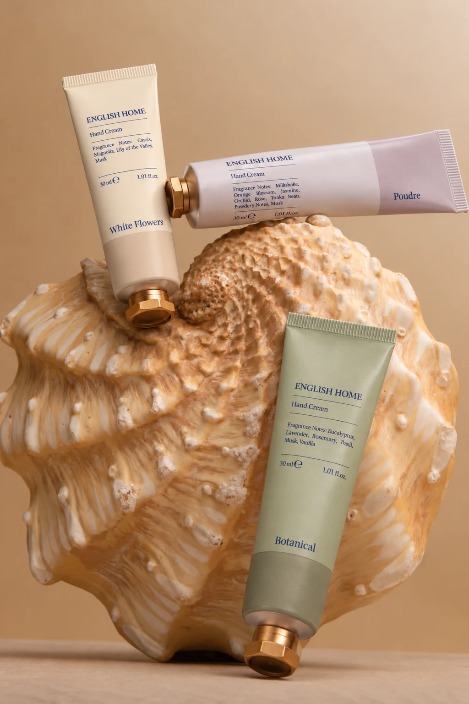
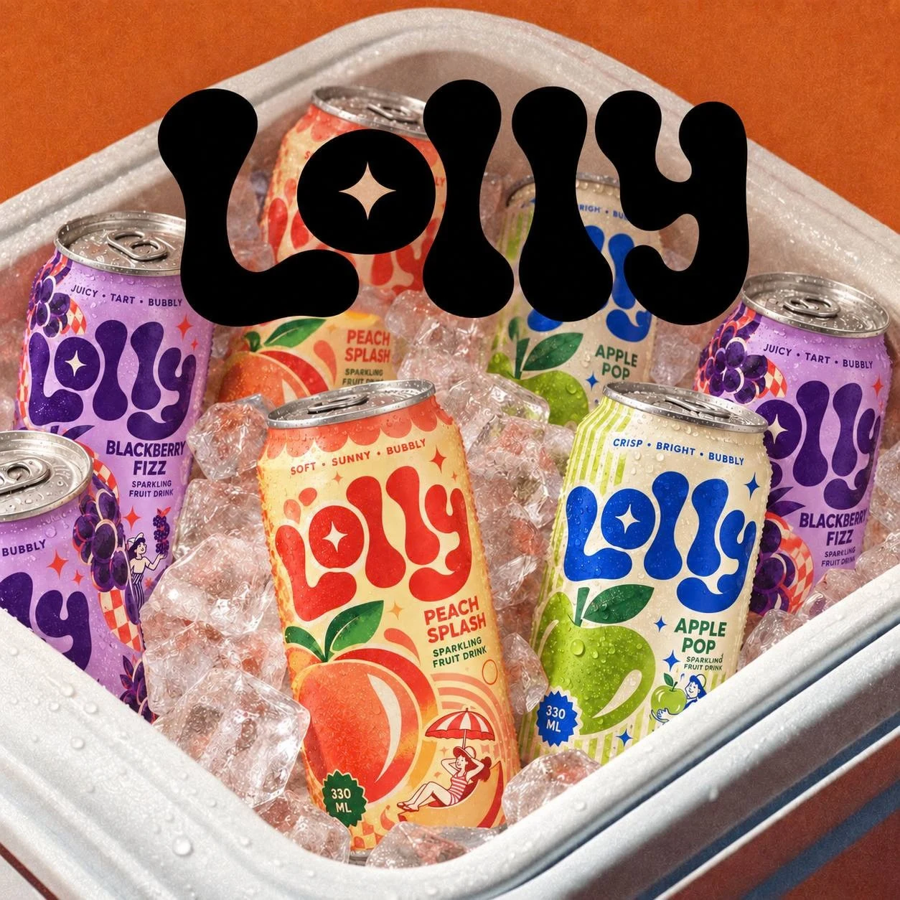
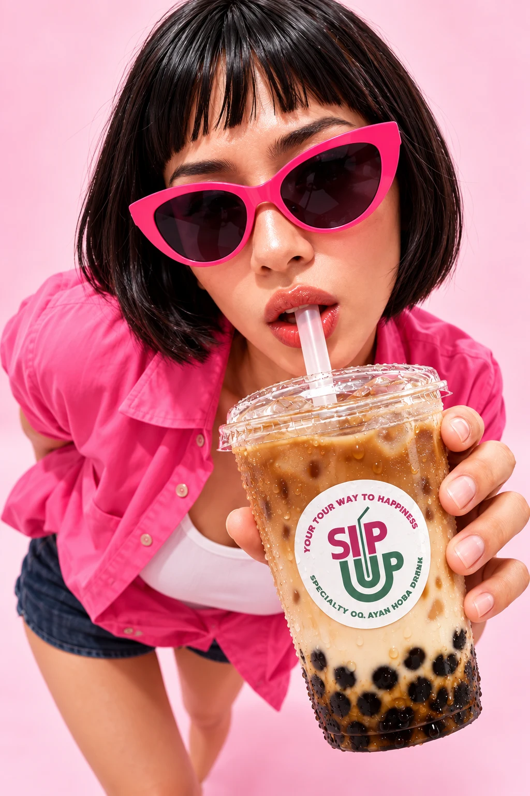
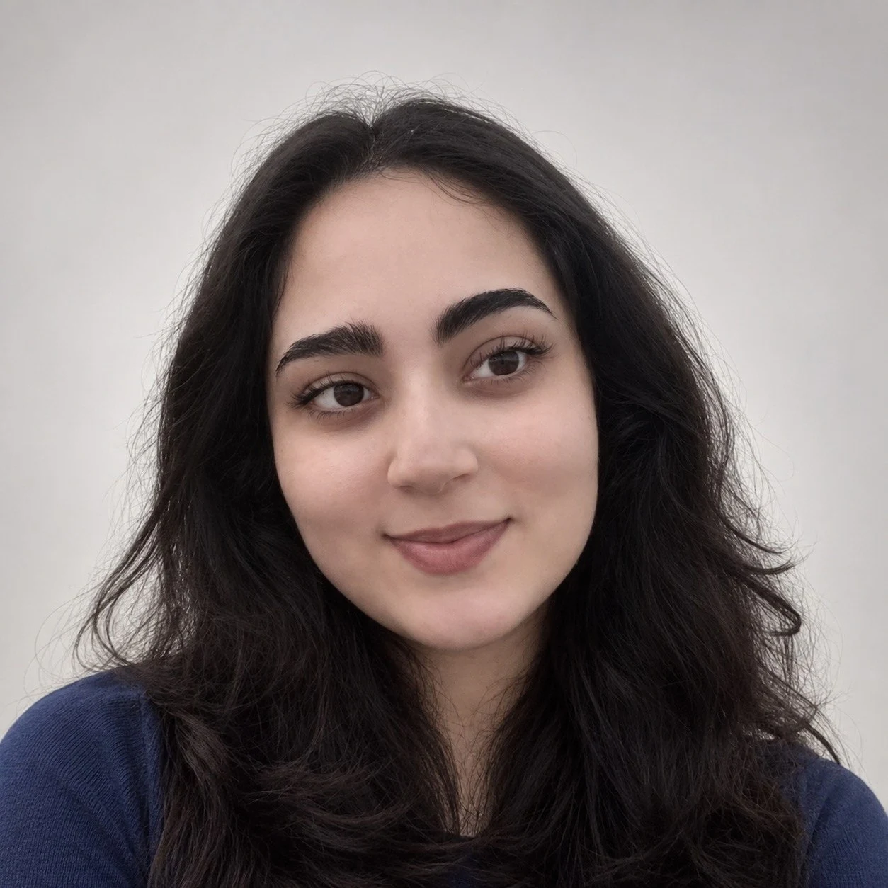

a different way of seeing
A creative
eye.



+ a little instinct ↗
01 — THE WORK
My life in folders.
A collection of concepts, content,
and things I couldn’t help making.
Different mediums. The same curious eye.

From spaces
to stories.
I’ve always been interested in how things make people feel.
I studied Interior Architecture at Istanbul Bilgi University, where I learned to think about colour, composition, and atmosphere. Somewhere along the way, I wanted to bring that same thinking into content—building ideas, visuals, and social worlds.
Now I explore creative concepts, photography, short-form video, image editing, and AI-assisted content. I bring ideas as well as aesthetics: every visual should have a reason to exist.
WHAT I BRING
Creative concepts
Visual direction
Social media content
Photography & video editing
A LITTLE MORE
BA, Interior Architecture
Istanbul Bilgi University
Farsi · Native
English · Fluent
Turkish · Intermediate
03 — THE NEXT CHAPTER
good things start with a conversationHave something
in mind?
elika.vala@gmail.com ↗Open to junior creative content,
visual direction, and social media opportunities.